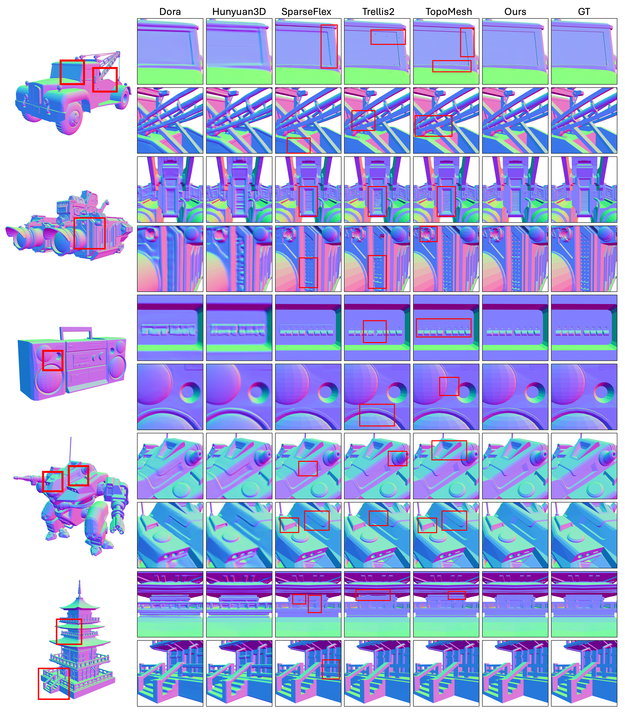
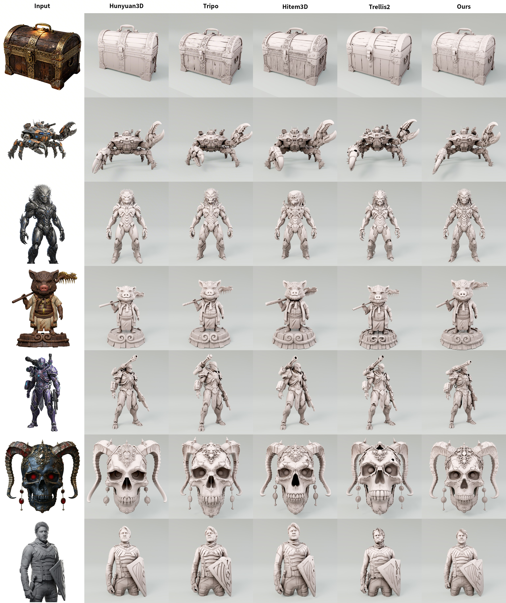

Brittle decoder outputs
Decoupled occupancy/UDF fields and intersection flags rely on hard thresholds, where tiny parameter shifts can remove primitives or jump zero crossings.
A generation-friendly sparse voxel autoencoding framework that preserves reconstruction fidelity while enabling robust high-quality 3D generation.
Abstract
Recent sparse voxel-based VAEs achieve strong high-fidelity 3D reconstruction, yet their generative counterparts often lag behind their reconstruction performance, largely due to the brittle output representation of sparse voxel decoding. Small diffusion perturbations can be amplified by discrete topological decisions into abrupt topology changes, holes, or grid-like artifacts.
Pygmalion reformulates sparse voxel decoding as a coupled SDF parameterization so perturbations induce smooth geometric transitions. With hinge-based sign correction, case-aware geometry supervision, and rendering-based refinement, the framework retains explicit mesh-level supervision while improving generative robustness. The resulting models scale across DiT sizes and voxel resolutions, producing complete surfaces, sharp features, and fine geometric details.
Method
Decoupled occupancy/UDF fields and intersection flags rely on hard thresholds, where tiny parameter shifts can remove primitives or jump zero crossings.
The decoder directly predicts continuous SDF values used by FlexiCubes, allowing local geometry to move smoothly under perturbations.
Hinge-based sign correction, case-aware geometry targets, and rendering refinement preserve mesh-level fidelity without reintroducing brittle decisions.
Reconstruction

Generation
